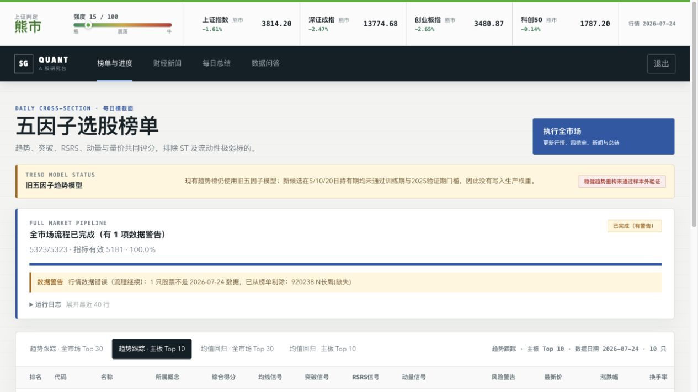
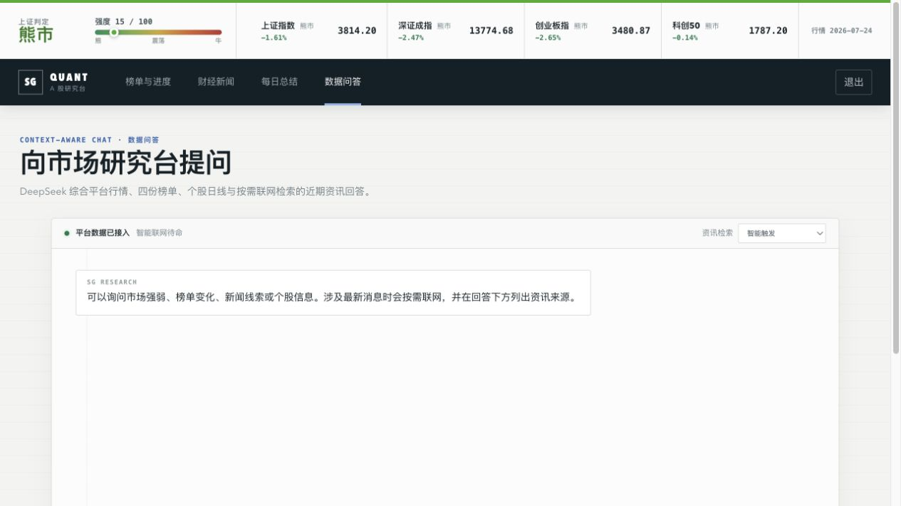

数据日期混用
部分股票和指数已更新，另一部分仍停留在上一交易日，结果却看起来“正常完成”。
AI PRODUCT CASE / 2026
SG 把 A 股收盘后的行情补齐、质量检查、量化筛选、新闻阅读、每日总结与追问， 收敛成一条可见、可降级、可复盘的研究流程。
核心结果先落盘，外部 AI 服务失败也不丢榜单。
不是一个“让模型预测股票”的 Demo。
它是一套让模型只在可验证事实之后工作的产品协议。
01 / PRODUCT
个人研究者每天在行情软件、新闻站点、表格和聊天工具之间切换。真正昂贵的是确认：数据是不是今天的、流程有没有卡住、AI 的结论从哪来。
部分股票和指数已更新，另一部分仍停留在上一交易日，结果却看起来“正常完成”。
全市场更新耗时较长，只有后台日志，用户无法区分运行中、卡死与部分失败。
纯本地问答无法解释最新事件；盲目联网又带来成本、延迟和提示注入风险。
CORE EXPERIENCE

02 / AI SYSTEM
“今天市场为什么普涨？结合最新政策和平台数据回答。”
先给结论，再区分平台数据与外部资讯，并在答案后展示实际使用的来源。
行情、日期与新闻来源不交给模型猜。
模型负责归纳、关联、回答与明确不确定性。
搜索、模型和数据异常都变成用户看得懂的状态。
CONVERSATIONAL RESEARCH
用户可以选择智能触发、始终联网或仅使用本地数据。Tavily 结果不足时补 RSS；全部失败则继续使用本地上下文，并明确标注降级。

03 / EVIDENCE
候选趋势因子能够增加榜单变化，但训练和验证结果未过门禁。项目没有为了作品展示掩盖失败，而是保留实验、披露偏差并停止替换。
候选因子多项 Rank IC 为负
超额 Sharpe 未通过门槛
不参与选权，只作最终检查
保留研究代码，不替换生产权重
04 / REFLECTION
DELIVERABLES